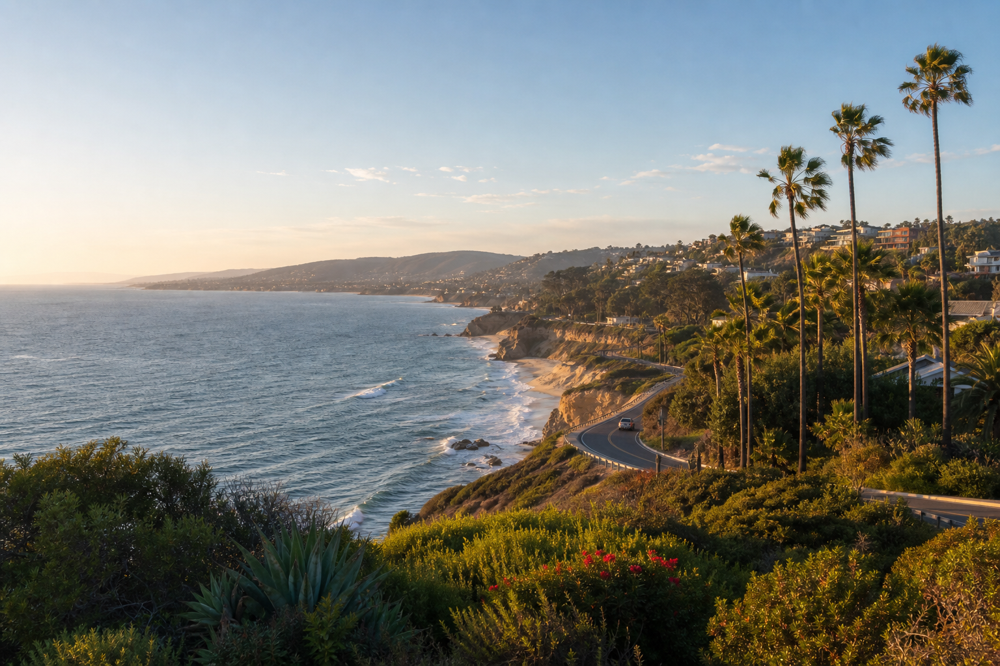

West
Los Angeles · San Francisco · Seattle · Las Vegas
Browse cities by region and build a short list for your next search.
Los Angeles · San Francisco · Seattle · Las Vegas
Denver · Dallas · Chicago · Minneapolis
Boston · New York · Atlanta · Miami
The route map groups Meridian cities by region and pairs airport codes with names people actually recognize. It is designed for the traveler who knows the kind of weekend they want but has not chosen the city yet.
Start in the West, Central, or East collection, then move into a city guide or fresh search. The map is intentionally quieter than a live operations screen; current flight details stay on the flight-status page.
Learn more ›Coastal cities, desert weekends, and mountain gateways make the western group useful across very different seasons.
Denver, Dallas, Chicago, and Minneapolis anchor a broad middle section with strong urban and outdoor contrasts.
Historic streets, warm coastlines, major museums, and dense neighborhoods sit within a short city list.
A route map is most helpful when it answers practical questions: where Meridian flies directly, which cities make sensible connections, and how a destination fits the amount of time available.
A nonstop route can preserve more of a short weekend, while a well-timed connection can open a destination that would otherwise be difficult to reach. Compare total journey time rather than only the time in the air, and leave room for meals, walking between gates, and the pace of anyone traveling with you.
The map also reveals clusters of cities that work well for an open-jaw trip or a return visit. Coastal weather, mountain access, and major event calendars can change the experience from month to month. Browse the destination guide after choosing a region so the route decision is grounded in what the group wants to do.

Pair a waterfront morning with neighborhood food and an open afternoon.
Browse western cities ›Denver makes it easy to combine an urban evening with a wider horizon.
Explore Denver ›Boston rewards a compact plan and comfortable walking shoes.
Explore Boston ›